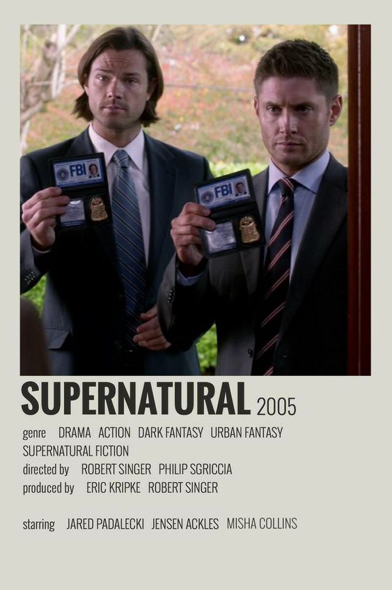
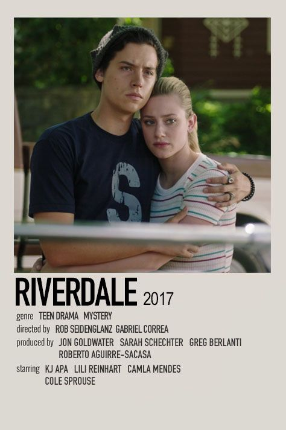
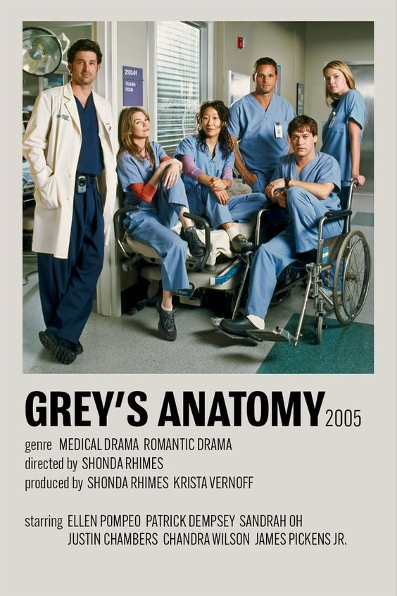
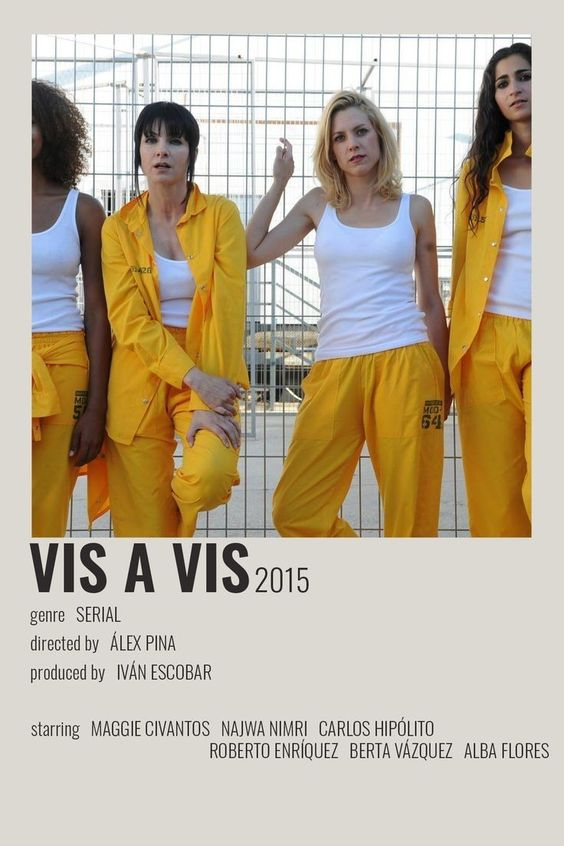

Exercício 4
Tabela
My Favs
| Favoritos |
Não Favoritos |
| Supernatural

- Melhor relação entre irmãos
- Enredo bem trabalhado
- Ensinamentos sobre a vida
|
Riverdale

- Mudança de roteiro ao longo das temporadas
- Cenas cringes
- Personalidade de personagens
|
| Brooklyn 99

- Elenco bem elaborado
- Personagens bem pensados
- Faz críticas sem serem forçadas
|
Grey´s Anatomy

- Elenco mal elaborado
- Muita prolongação/bagunça
- Mais de 20 temporadas
|
| American Horror Story

- Roteiro muito bem elaborado
- Cada temporada aborda um assunto diferente
- Histórias que prendem a atenção de telespectadores
|
How I Met Your Mother

- Comédia forçada
- Imita outras séries
- Personagem principal é arrogante
|
| The Vampire Diaries

- Química perfeita entre os atores
- Irmandade Salvatore
- Cenas que prendem a atenção de telespectadores
|
The Society

- Série sem nexo
- Episódios longos sem desenrolamento
- Mudança de comportamento de personagens sem um motivo
|
| Vis a Vis

- Representatividade feminina diferente da tradicional
- Drama que prende a atenção dos telespectadores
- Os episódios tem continuidade, fácil de entender
|
Pretty Little Liars

- Se perde ao longo das temporadas
- Confusão extrema ao tentar descobrir quem é "A"
- Personagens sem química
|